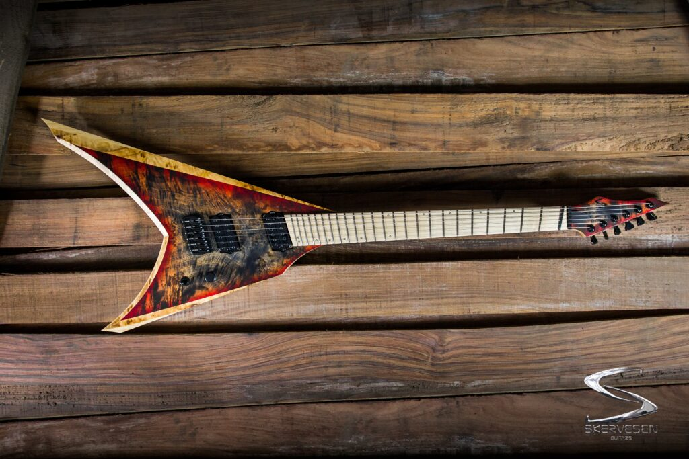

.jpg)
O que é o GuitarHub?
O GuitarHub é uma webpage que funciona como um display de guitarras do interesse do usuário, para informar sobre suas características, assim, norteando o usuário em suas compras futuras.
Veja maisDisplay
Yngwie J Malmsteen Stratocaster® - Fender
$2,349.99

ESTILO FORMIDÁVEL DE SHRED
Ainda o principal e mais formidável praticante do gênero, Yngwie Malmsteem praticamente inventou o fragmento neoclássico sozinho. A guitarra com a qual ele sempre fez isso é uma Stratocaster, e para aqueles que aspiram ao estilo extravagantemente rápido de Malmsteen, a Yngwie Malmsteen Stratocaster é modelada a partir da Strat® favorita do virtuoso metal sueco, até seus captadores especiais e escala recortada. Um modelo com design distinto para um dos mestres Strat mais distintos do mundo.
www.fender.com• Braço de bordo de montagem por parafuso de máquina com perfil "C" moderno e tensor "bala"
• Escala de bordo recortado ou jacarandá com raio de 9,5" com porca de latão e 21 trastes "super jumbo"
• Três captadores Seymour Duncan® YJM Fury™ com comutação de três vias
• Controle de tom "sem carga" para captadores de ponte e intermediários
• Botões de controle de plástico envelhecido, ponta de interruptor e tampas de captação
• Ponte tremolo sincronizada estilo vintage
Body Material
Body Finish
Body Shape
Alder
Gloss Urethane
Stratocaster®
Neck Material
Neck Finish
Neck Shape
Maple
Gloss Nitrocellulose Lacquer
Modern "C"
Scale Length
Fingerboard Material
Fingerboard Radius
25.5" (64.77 cm)
Scalloped Rosewood
9.5" (241 mm)
Number of Frets
Fret Size
Nut Material
21
Super jumbo
Brass
Nut Width
Position Inlays
Truss Rod
1.650" (42 mm)
White dot
Bullet style
Bridge
Hardware Finish
Tuning Machines
6-Saddle American Vintage Synchronized Tremolo
Chrome
Fender® Vintage "F" Stamped
Pickguard
Control Knobs
Switch Tip
3-Ply White
Aged White Plastic
Aged White
Neck Plate
4-Bolt Vintage-Style
Bridge Pickup
Middle Pickup
Neck Pickup
Seymour Duncan® YJM Fury™ Strat® STK-S10B
Seymour Duncan® YJM Fury™ Strat® STK-S10N
Seymour Duncan® YJM Fury™ Strat® STK-S10N
Controls
Switching
Configuration
Master Volume, Tone 1. (Neck Pickup), Tone 2. No-Load Tone Control (Middle and Bridge Pickups)
3-Position Blade: Position 1. Bridge Pickup, Position 2. Middle Pickup, Position 3. Neck Pickup
SSS
Vaptor - Skervesen
€2549.00
Model:
Vaptor
Find out more:
https://skervesen.eu/product/vaptor/Preço
6 strings: €2549.00
8 strings: €3149.00